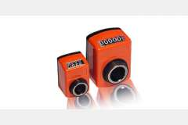
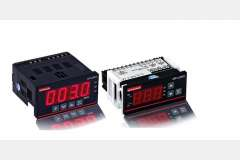
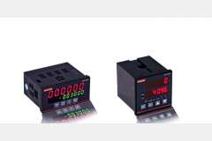
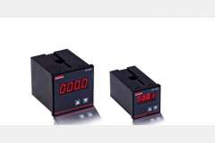
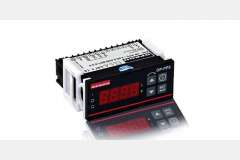

PANEL TİPİ ÖLÇÜM CİHAZLARI

Mekanik Sayaçlar
Genellikle ağaç ve profil makinalarında kullanılırlar. Delik çapı 14 ve 20 mm olmak üzere 2 çeşitleri bulunmaktadır. Mekanik olarak montaj şekline göre bir çok seçenek mevcuttur. Bir turda ki atım sayıları çözünürlüğü belirler.

OP-LDP Serisi Pozisyon Ölçme ve Kontrol
Gelişmiş pozisyon ölçme ve kontrol sistemleri ile endüstriyel uygulamalarınızda üstün performans.

OP-CN Serisi Universal Sayıcı
Çok amaçlı kullanım için tasarlanmış universal sayıcı sistemleri.

OP-MD Serisi Pozisyon Ölçme Cihazı
Hassas pozisyon ölçümü gerektiren uygulamalar için özel olarak geliştirilen cihazlar.

OP-PP Serisi Dijital Potansiyometre
Yüksek çözünürlüklü dijital potansiyometre sistemleri ile elektrik kontrol uygulamaları.